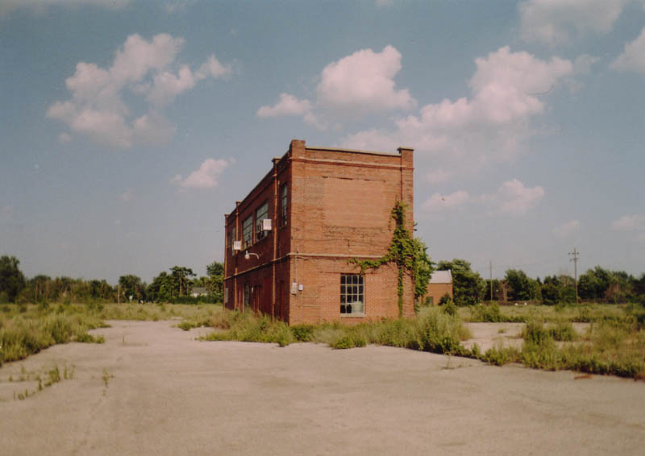
While on an expedition to find the legendary Lima Tuberculosis Hospital, a friend and I stumbled across this abandoned manufacturing and storage complex on the west side of Lima, near the BP gasoline refinery. It was once the site of the vast Lima Locomotive Works--one of the biggest names in railroads and most famous industrial Ohio brands. It dominated the market for steam locomotives between the turn of the century and the Great Depression; read about the history of the history of the LLW here.
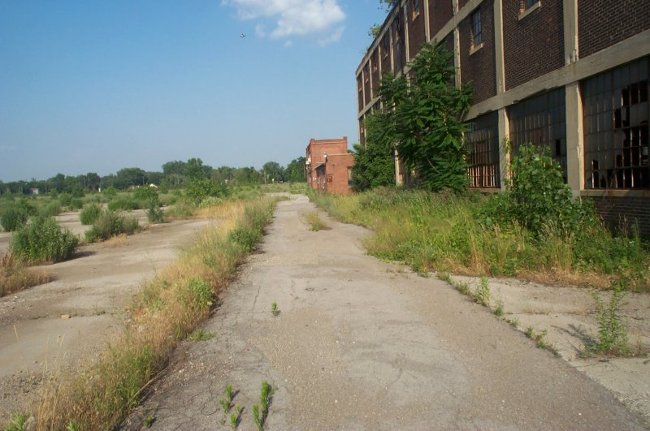
It's a narrow two-story, two-building setup in the middle of a very large vacant lot--a lot so cracked and broken and overgrown with stiff kneehigh weeds that it barely looks like the truck lot it once was. The formerly paved lot also borders the rail line, with a single small freightloading depot boarded up alongside the rails. One of the two buildings was occupied at one time by the Clark Machine Company, if paper evidence inside is correct, and it's obvious that some manufacturing went on here, but they're not big enough to be full-fledged factories. Most of the front building is office space.
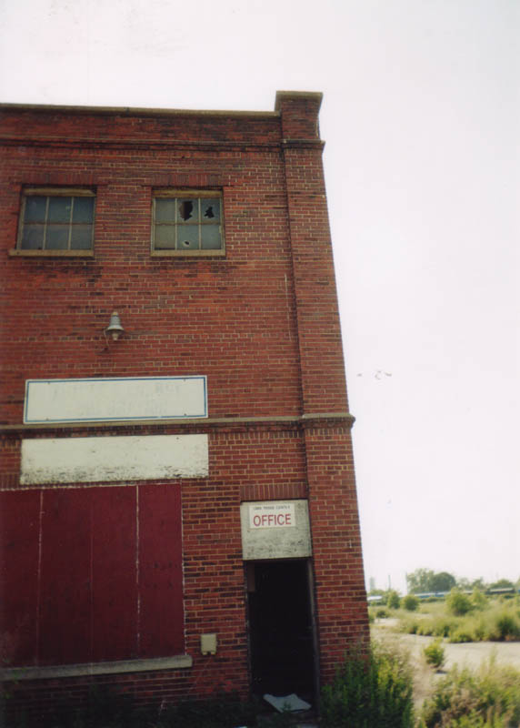
Entering the office portion of the first building, you find yourself in a narrow stairwell which leads up to the second floor.

The office is extremely well lit, thanks to the wall-size windows. One way to tell how long the place has been abandoned is to take a look at the window glass; a longer-closed place would have almost nothing left thanks to vandals and the weather, but the Lima Trade Center still has dozens of panes intact.
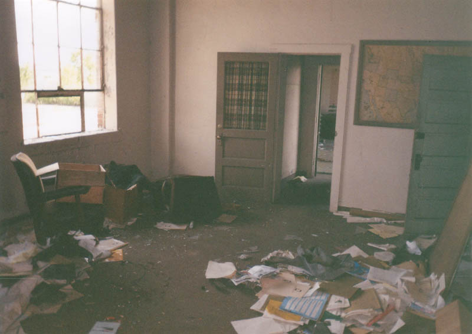
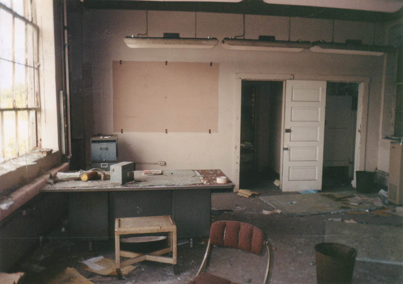
Desks, office furniture, and equipment are scattered around the various office rooms, which are completely trashed. As you can see in the next photo, typewriters were still in use when people last reported for work here.
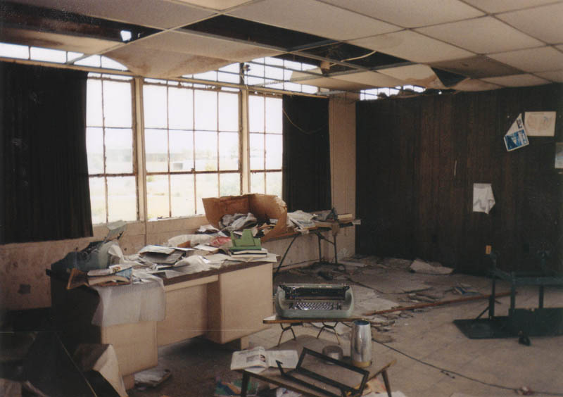
The two buildings are joined by metal catwalks. The first building becomes three stories instead of two so it can join up with its partner.
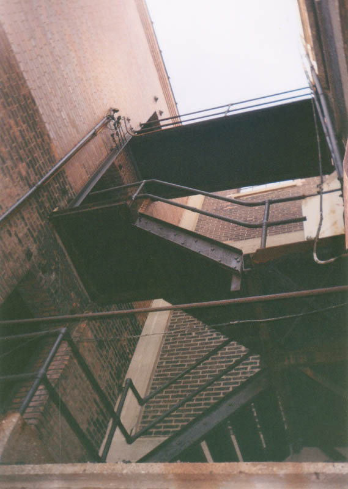
It's back here that most of the industrial stuff was rusting away and collecting dust when we explored in the summer of 2002. Three-fourths of the rear building consists of vast, musty storage rooms with pillars, littered with miscellaneous junk.
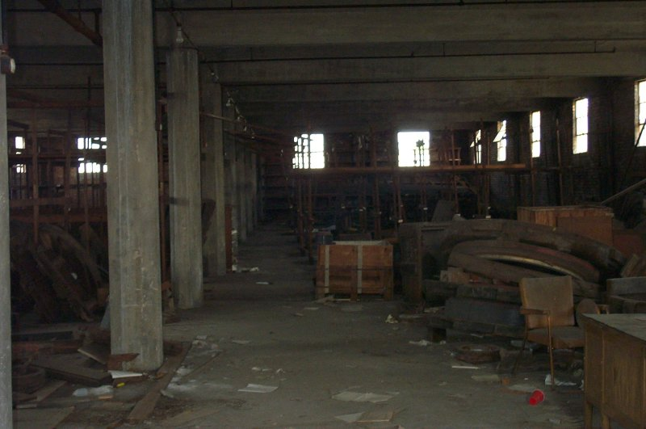
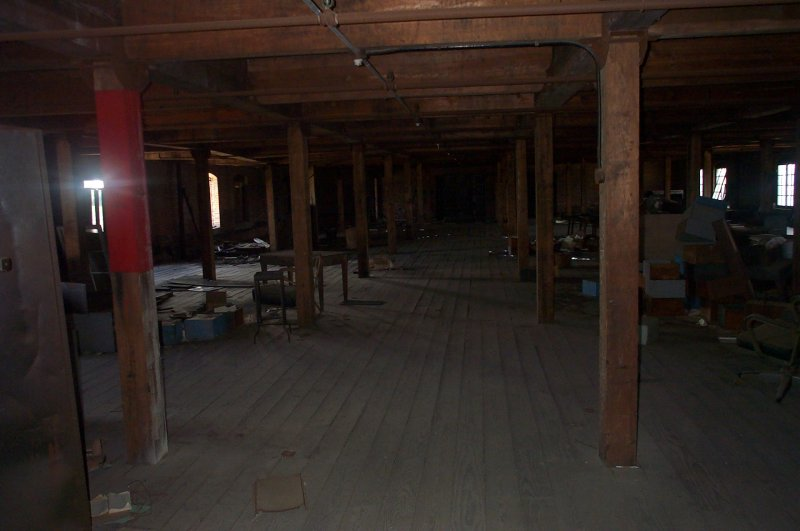
Then there are the different storage rooms, such as the one pictured below, which is filled with wooden floor-to-ceiling shelving units. What did they store here? Machine parts, I suppose? Your guess is as good as mine.
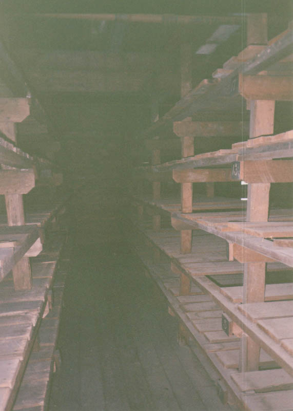
They definitely moved machinery around in this back building, though; it resembles a warehouse and even has its own gigantic freight elevators. The one shown here has its wooden gate up, but on the third floor the shaft was wide open and quite dangerous, since the car itself was all the way at the bottom. It would have been easy to fall into if we'd been there at night.
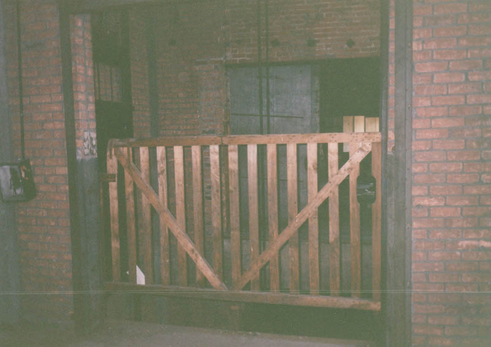
Some of the storage areas were obviously used for tools of some sort. One had pegboard walls with the outlines of different pieces of equipment painted on them. Another had metal storage bins still full of washers, nuts, and screws of various gauges.
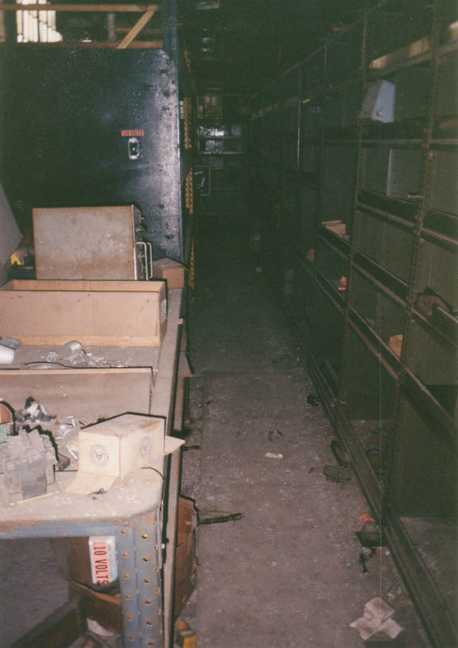
. . .
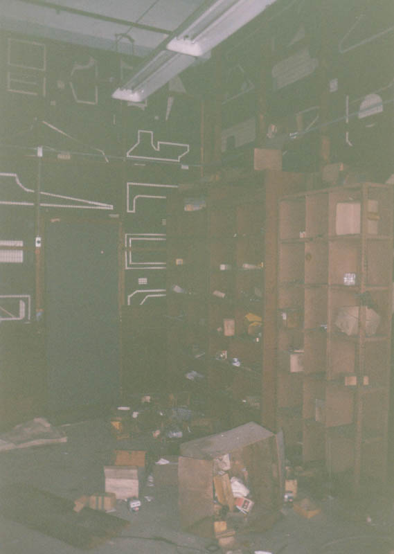
Whatever happened to end this building's life, it probably had something to do with business failure. The economy in Lima isn't exactly bursting at the seams anyway, and in the 80s it was pretty much in the toilet. One clue comes from the 1976 election sticker on an office door window.
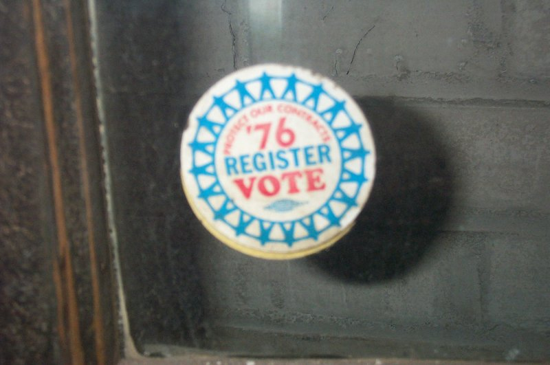
The last occupants of the Lima Trade Center left a lot of stuff behind. Some of it is just the basic junk you wouldn't bother to clean up if you were abandoning a building indefinitely, but some of it is strange. There's an entire room full of boxes from the crane division of the Clark Machine Co., mostly full of paperwork from the 70s.
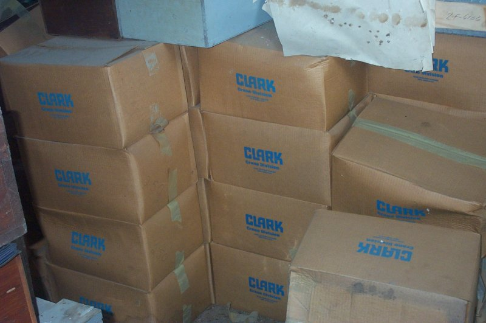
Then there's the weird machinery. In a rear stairwell we came across this metal box, which almost looks like some kind of processor, but is probably the main control box for the building's electronics. Again, that's nothing but a guess.
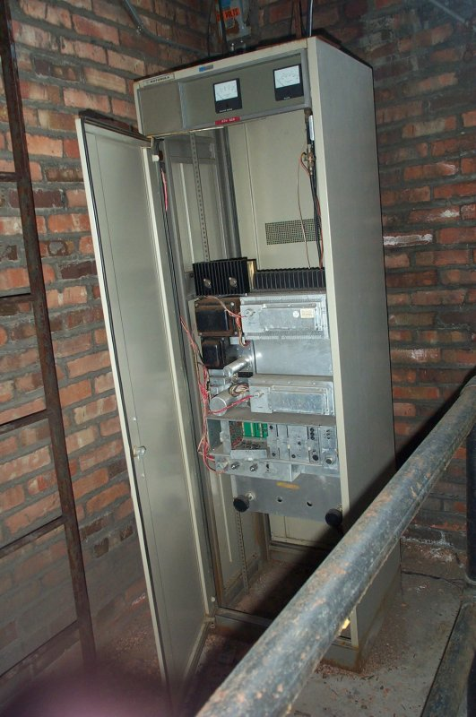
An entire department on one floor was filled with the type of machine you see in the photo below, which I think is some kind of apparatus for wrapping things in brown paper. (You can see the rolls on the bottom.) Maybe this was Shipping and Receiving. With those nasty rollers, it doesn't look like the kind of machine you'd want to operate while wearing a tie.
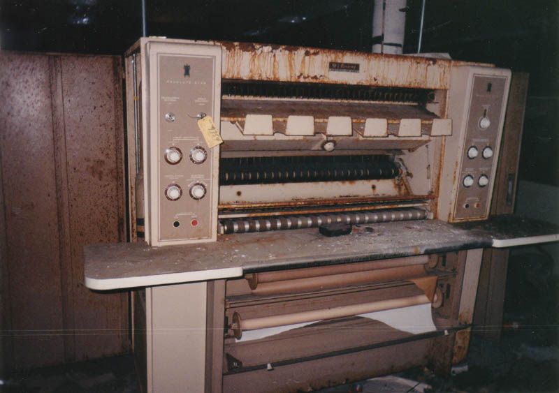
Finally there's the weirdest thing stored on the third floor of the warehouse building: a giant wooden sign that says "Seasons Greetings." They must have put this sign out around December, though it's hard to imagine how anyone could have seen the Trade Center from the distant road.
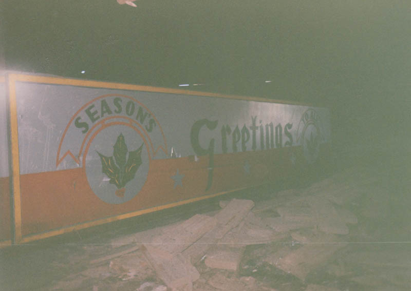
So that's the Lima Trade Center--an interesting abandoned building I came across entirely by accident. As always, if you have any knowledge about the place, or if you know anybody who does, please drop me a line and let me know.
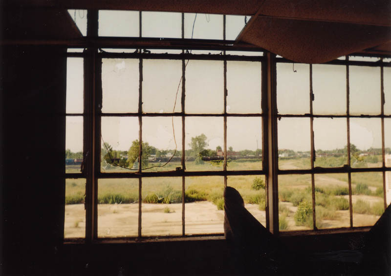
Lima Locomotive Works - History
Back